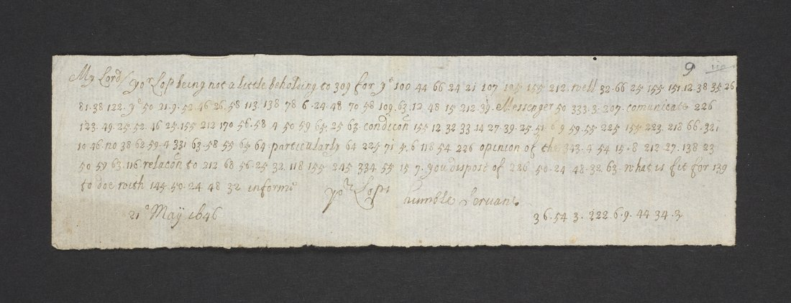
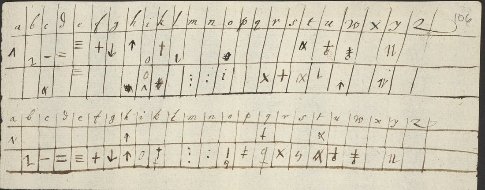
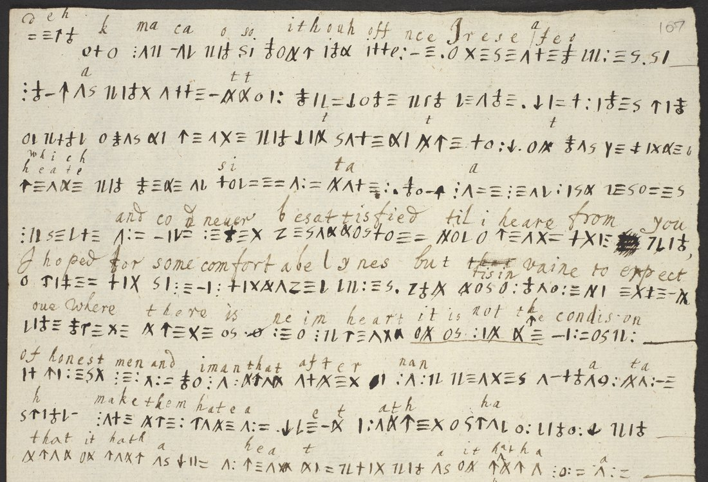

At a glanceNot solved: Cryptiana #5 and #6 · Known key applied: f. 107 only, 122 of 128 words
- The letters
- Cryptiana’s item #5 is Prince Maurice to his brother Prince Rupert, Worcester, 7 July 1645, printed by Warburton with its 93 cipher groups. Item #6 is two intercepted royalist letters of May 1646: one to “My Lord” (21 May), one to the King (13 May).
- Where
- Maurice’s letter: Warburton, Memoirs of Prince Rupert (1849) iii. 133; it is not on DECODE. The intercepts: British Library, Add MS 72438 f. 9r and f. 10r–v (DECODE R8623, R8624). The same volume holds the keys taken in Digby’s coach in October 1645 and the graphic-sign letter f. 107 (R8728).
- The ciphers
- Numeric nomenclators: two-digit figures for letters, higher figures for words and names. f. 9 and f. 10 use two different keys. f. 107 is a different kind of cipher: a simple alphabet of about twenty drawn signs.
- How it was tried
- f. 9, f. 10, f. 104 and the cipher passages of a Trevor letter were transcribed from the DECODE images. All 73 keys in Add MS 72438 were screened by their number ranges, and six letter tables were applied: none gives sense. The f. 106 key sheet deciphered f. 107, checked against a contemporary interlinear gloss.
- What f. 107 says
- A woman writes to a royalist officer, an old acquaintance, who was reported killed or taken: “God knowes how ioyfull I was to heare you got safe to the King”. No names, place or date.
- Still open
- All of Maurice’s letter, f. 9, f. 10, f. 104 and Trevor’s cipher passages: no key in the volume or on DECODE fits, and the texts are too short to rebuild one. Six words of f. 107.
- Credit
- Satoshi Tomokiyo (Cryptiana) listed the two items and quoted the opening of f. 9. The British Library catalogue describes f. 9 and f. 10 as “largely in (undecoded) cipher”.
01 The documents
Satoshi Tomokiyo’s Cryptiana lists, among royalist ciphers of the Civil War with no known decipherment, a letter of Prince Maurice to Prince Rupert (item #5) and two intercepted letters in the British Library (item #6). This page reports what came of trying them, and of the other cipher pieces found next to them.
- Maurice to Rupert, Worcester, 7 July 1645 (#5). Eliot Warburton prints it in his Memoirs of Prince Rupert and the Cavaliers (1849), vol. iii, p. 133, with the cipher as figures: 93 groups, 63 different, the highest 398. Clear words stand between the cipher runs (“By your cipher, you may observe, that … Garrison, … Accordingly, …”). Leven’s Scots army was four miles from Worcester, and Maurice is explaining why he cannot bring his regiments to Rupert at Bristol. “By your cipher” means a cipher Rupert had issued to his brother. Warburton’s source was the Rupert correspondence, BL Add MS 18980–18982. The original is not among the DECODE records of those volumes.
- Add MS 72438 f. 9r (#6, DECODE R8623). One slip to “My Lord”, dated 21 May 1646, verso blank: “Yor Lop being not a little beholding to 309 for ye 100 44 66 24 21 107 105 155 212 well …”. 152 cipher groups between clear words (“Messenger”, “comunicate”, “particularly”, “opinion of the”), signed in cipher “36 54 3 222 6 9 44 34 3”. Figures 3–81 for letters, 100–343 for words. Cryptiana’s excerpt has “500 44 66” and “195”; the image shows 100 and 105.
- Add MS 72438 f. 10r–v (#6, DECODE R8624). A letter to the King, “May it please your Matie”, dated 13 May 1646, endorsed “Quadrupl.” (the fourth copy). 721 cipher groups: letters 1–99, words 100–697, with 360 and 361 very frequent and “430 543” six times (“resolved to expect 430 543”). It is signed “555 697 496”. The right edge of the recto and the left edge of the verso are torn, and the verso is stained. The two intercepts use different keys: f. 9 has no 360 or 361 and no group above 343.

Add MS 72438 is vol. 197 of the Trumbull Papers: Georg Rudolph Weckherlin’s file of cipher keys and intercepts as Parliament’s secretary for foreign tongues. Its core is the bundle of keys found in Lord Digby’s coach after the royalist defeat at Sherburn in October 1645. On DECODE the volume has 81 records: 8 ciphertexts and 73 keys. Two more ciphertexts in it turned up in the search: f. 104r (R8725), an all-numeric letter of 256 groups, and f. 107r (R8728), the graphic-sign letter of section 06. From the Rupert correspondence, Add MS 18982 ff. 51–52 (R8433, DECODE “Bristoll”) was also transcribed, because its cipher has the same shape as Maurice’s.
02 The keys of Digby’s coach
f. 25r (R8627) is the index of the bundle, headed “Cyphers taken in the L. Digbys [coach]”. It numbers the keys 80 to 139 and names each one’s correspondents. Among them are 80 the Countess of Cork, 101 Lord Traquair and Digby, 103 the Earl of Antrim, 104 Thomas Killigrew, 105 Lord Culpeper and Sir L. Dives, 112 Lord Taaffe, 117 the Earl of Bristol, Digby, Sir Richard Greenvill and Doctor Cox, 118 Ormond and Prince Rupert, 119 Lord Inchiquin and Digby, 123 His Majesty’s cipher with the Queen, 125 Mr Browne, 131 Lord Goring, 132 Sir Kenelm Digby and 138 “many sheets, De Vic’s hand”. The number of each key is written on the back of its sheet, so the index ties most DECODE key records to a correspondent. NOTES.md has the full list.
A key can only fit a letter if its number ranges cover the letter’s figures. f. 9 needs letters up to about 81 and words from 100 to 343, with no letter+digit groups. f. 10 needs letters 1–99 and words up to 697. Maurice needs words up to 398. Read from the images, most of the 73 keys fail on this alone. Their word series end far too low (to 105, 144, 152, 200, 274, 293), they use letter+digit groups (a1, p6), they are letters-only or graphic, they are French, Latin or Weckherlin’s own, or they are four-digit codes.
The keys whose ranges came close were applied to the letter runs, which make up most of each text:
- Key 118, Ormond and Prince Rupert (R8655, ff. 59–60): letters 1–80, nulls 81–90, words 91–434. On f. 9, “100 44 66 24 21 107” gives “Aurange Prince, o, r, m, b, Anglesey”. On Maurice, “15 26 342 148 136 13” gives “a m [blank] Design Dungarvon c”. No.
- Key 123, the King with the Queen (R8687, ff. 67–68; R8723 is a decipherer’s worksheet of the same key): on f. 9 and f. 10, gibberish. Its 342 is Broughton, which does not suit f. 104 either.
- Key 125, Mr Browne (R8694): letters 2–79, words 80–371, names to about 698. The ranges fit f. 10, but the result is gibberish.
- The cipher “betwixt the L. Digby & his servant Walsingham (now at Modlen College)” (R8724, ff. 102–103): on f. 9 and f. 10, gibberish. It should be the key of the Walsingham letters R8625/R8626 of 1647.
- The Parliament key R8743–R8745 (“To decypher speedily”) and the Parliament key R8741: gibberish on every text.
- Tomokiyo’s royalist keys of 1644–45 (Charles I–Rupert–Digby–Ormond, with letter+digit codes; Nicholas–Rupert, May and July 1645): the ranges do not fit Maurice, and the May 1645 fragment gives no sense on Maurice or f. 9.
So no key in Add MS 72438 fits f. 9 or f. 10. That is less surprising than it first looks. The coach keys were taken in October 1645, and the intercepts are of May 1646, seven months later, when the King was with the Scots. Their keys were probably never captured with the others.
03 Maurice to Rupert, 7 July 1645: not solved
The letter’s 93 groups fall into 18 different figures below 100 (letters) and 45 from 100 up (words). The most repeated are 148 (5 times), then 15, 229 and 293 (4 each). Neither Tomokiyo’s two known royalist keys of 1644–45 nor any coach key fits it. The figures of Arthur Trevor’s letter to Rupert (section 05) have the same shape, but that letter could not be broken either. A cipher Rupert issued to his brother is not known in print. Unless that key turns up, 93 groups from a nomenclator of about 400 entries cannot be attacked from the ciphertext alone.
04 The intercepts of May 1646, f. 9 and f. 10: not solved
Both letters were transcribed in full from the DECODE images. The figures are in f9_groups.txt and f10_groups.txt, and the transcriptions with the clear words in f9_transcription.txt and f10_transcription.txt. The clear words show what the letters are about without unlocking them. f. 9 is a courtesy letter about a messenger and a “relacon” (report) to be passed on. f. 10 is a long report to the King with clear words like “of severall”, “war”, “seasonably”, “absolute”, “Gent” and “I beleeve”.
A key rebuilt from the ciphertext alone is out of reach. f. 9 has 108 letter groups in 28 runs, for an alphabet of about 80 values. f. 10 has 300 letter groups in 117 runs, with a mean run of 2.6 letters, over about 99 values. A homophonic solver needs much longer runs than that. These are, as before, letters whose key is not in the box.
05 f. 104, and Trevor to Rupert: not solved
- f. 104r (R8725). DECODE marks it “Decrypted”, but the sheet has no decipherment on it. It is an all-numeric letter of 19 lines: 253 groups, letters 1–99, words 100–859 (342 the most frequent), with one parenthesis. The back is endorsed “The direction endorst 347: 313: 364”. Keys 118, 123 and 125, R8744 and the Parliament key R8741 were applied, and none gives sense.
- Add MS 18982 ff. 51–52 (R8433). Arthur Trevor writes to Rupert from Bristol and signs “Ar: Trevor”. DECODE dates it 8 April 1645, but the loss of Sir Thomas Coghill’s house (Bletchingdon, 24 April) puts it at about 28 April. Its 62 cipher groups (54 letters in four runs, 8 words) sit in clear context: “Sr Vivian Molineux, Sr Bryan O’Neile … were by ill weather forced 137 26 50 30 12 … & from thence by night marches they recovered 67 24 43 9 31 52 39”. A seven-letter place name with no repeats would be Chester, for instance. Homophonic annealing with that crib, with “bristol” and with none gives a different English-looking string on every restart: 54 groups over 36 values is far too little. No coach key fits it.
06 f. 107: a letter in graphic signs, deciphered with the key beside it
f. 107r (R8728) is a small sheet of ten lines of drawn signs, with a four-sign heading. A contemporary decipherer wrote a partial gloss over it: some words in full (“I hoped for some comfortabel lynes but tis in vaine to expect”), elsewhere only scattered letters. The leaf before it, f. 106r (R8727), is a key sheet with two graphic alphabets. The lower alphabet is the key of f. 107, and it applies unchanged. The letter also uses a few homophones the sheet does not list: a plain-shaped e, Ʈ for h, ɣ for r, a 7-shaped y and a plain α for t. Some signs look like letters but are key signs: the small circle is i and the upright stroke is o. On the key the colon stands for both m and n, and one sign serves u and v.

Every word the gloss gives was checked against the key, and they agree. The letter has 128 cipher words. Six of them are unread or only guessed, so 122 words (95.3%) are deciphered. In the old spelling, with conjectures in brackets:
[heading: four signs, unread] … if I may cal you so without offence. I rese[ave] few lynes, so much as your affection would giue you leaue. God knowes how ioyfull I was to heare you got safe to the King. It was reported heare you were al kild […] and taken, which made me almost besides myselfe, and cold neuer be sattisfied til I heard from you. I hoped for some comfortable lynes, but tis in vaine to expect one where there is […] my heart. It is not the condision of honest men and woman that after [so] many yeares acquaintance should make them hate and neglect one another. I shal in louing you, that it hath as good an heart to [dye] for you as it hath a mind and …
The writer is a woman (“honest men and woman”), an acquaintance of many years. She writes to a royalist officer who had been reported killed or taken but “got safe to the King”. The text has no names, no place and no date. The key sheet is filed among the coach keys, so the letter probably went to Digby or one of his correspondents before October 1645, but the text does not prove it. The verso is blank, and the text breaks off at the foot of the recto.

07 Method
- Access. The British Library’s own images of Add MS 18980–18982 and 72438 have been offline since the October 2023 cyber-attack. DECODE holds the images but marks them private. Logged in, 115 DECODE records of Add MS 72438, 18982 and 18983 were listed with their metadata (
decode_records.tsv). None has a transcription file, and Add MS 18980 and 18981 have no records at all. - Transcription of f. 9, f. 10, f. 104 and the R8433 cipher runs from the images. The counts were measured on the figure files.
- Screening of the 73 keys by their number ranges and structure, read from the images, followed by the six letter tables applied to the letter runs (
keys.py,test_letters.py). - For R8433, homophonic simulated annealing with an English 1640s 4-gram model, with and without cribs (
trevor_anneal.py). It did not converge. - For f. 107, the f. 106 lower alphabet was applied and checked word by word against the gloss. The homophones it does not list were added from the glossed words. Line 6 was transcribed sign by sign and decoded mechanically (
f107_decode.py) for the figure below.
08 What remains open
- Maurice to Rupert, 7 July 1645: all 93 groups. Blocker: no key material. “Your cipher” is not in Add MS 72438 or on DECODE, and Add MS 18980–18981, Warburton’s source, have no DECODE images.
- f. 9 (R8623), 152 groups, and f. 10 (R8624), 721 groups: all unread. Blocker: no key material. None of the 73 keys in the volume fits, and the letter runs are too short for a ciphertext-only rebuild.
- f. 104 (R8725), 256 groups with the endorsement: unread. Blocker: no key material.
- R8433, Trevor to Rupert, 62 groups: unread. Blocker: too short. 54 letter groups over 36 values do not give a stable solution.
- f. 107, six words, graded H/C/M/I as in the README conventions. The four-sign heading “=≡↑ŧ̥” does not make a word (I). The end of “rese[ave]” is “receive” by sense (M). “≡≡=” after “kild” is unread (I). “:≡o” before “my heart” is unread (I). The blotted word before “many yeares” is “so” by sense (C). “=7L” before “for you” is “dye” by sense (M). The gloss skips all six, and there is no second copy. The rest is H: each word is deciphered by the key and, where the gloss covers it, agrees with the gloss.
Overall, 122 of 1,412 cipher tokens are deciphered: 8.6%, with f. 107 counted in words and the other five documents in figure groups. The two items Cryptiana lists are at 0%.
09 Sources
- British Library, Add MS 72438 (Trumbull Papers vol. 197), catalogue description: f. 9r (DECODE R8623), f. 10r–v (R8624), the index f. 25r (R8627), keys R8628–R8745, f. 104r (R8725), the key sheet f. 106r (R8727), f. 107r (R8728). The DECODE images need a login.
- British Library, Add MS 18982 ff. 51–52, Arthur Trevor to Prince Rupert (DECODE R8433).
- Eliot Warburton, Memoirs of Prince Rupert and the Cavaliers (London, 1849), vol. iii, p. 133: Maurice to Rupert, Worcester, 7 July 1645.
- Satoshi Tomokiyo, Cryptiana, the pages on Charles I’s ciphers: the two items, the opening of f. 9, and the royalist keys of 1644–45.
Notes, transcriptions, the f. 107 reading and the scripts: targets/rupert/ in the repository.